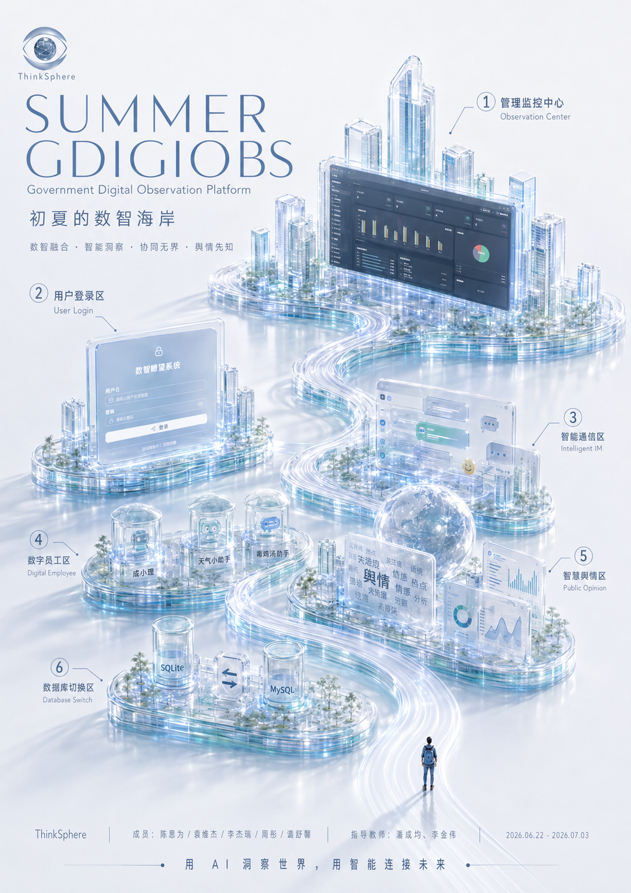

GDigiObs 数智瞭望系统
沿着 GDigiObs 的数智海岸线，从背景到成果
面向数智系统落地的协作团队
从数字化到数智化，传统系统面临的新问题
面向企业与政务场景的智能数据观察、社交协同、AI 问数与数字员工管理平台
将系统抽象成数智海岸线，让复杂系统变成可理解的地图
初夏数智海岸 — 六大功能区映射为一座未来城市

从基础功能到核心创新，全面覆盖实训要求
真实工程化交付链，从概念到上线的完整闭环
让数据可观察，也可以被自然语言提问
在系统内部完成沟通、协同、文件传输与数字员工互动
AI 不再只是对话框，而是可以被配置、被调用、被拉入群聊的系统角色
利用 Echarts-GL 与 Wordcloud 构建数智化大屏，AI 自主定时分析全量文本数据
前后端分离，工业级全栈软件工程规范
ThinkSphere · GDigiObs · 2026